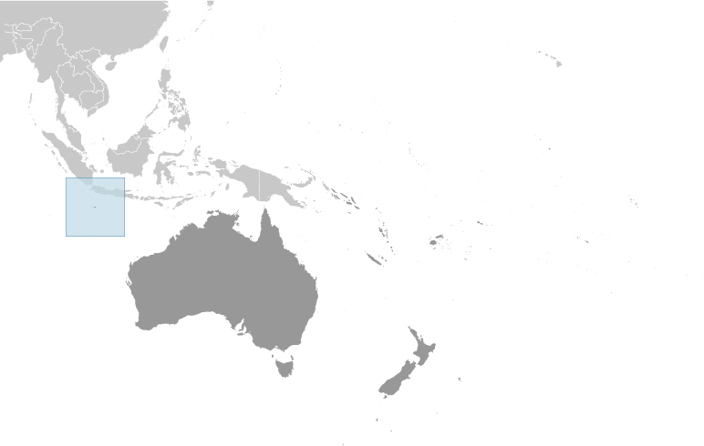
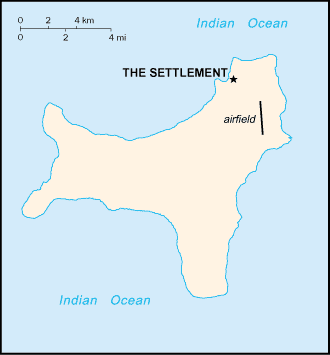
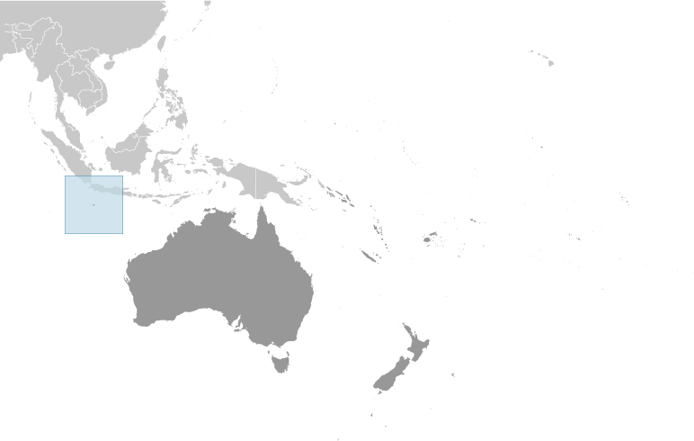
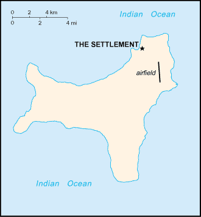

Australia-Oceania :: CHRISTMAS ISLAND
Introduction :: CHRISTMAS ISLAND
-
Named in 1643 for the day of its discovery, the island was annexed and settlement began by the UK in 1888 with the discovery of the island's phosphate deposits. Following the Second World War, Christmas Island came under the jurisdiction of the new British Colony of Singapore. The island existed as a separate Crown colony from 1 January 1958 to 1 October 1958 when its transfer to Australian jurisdiction was finalized. That date is still celebrated on the first Monday in October as Territory Day. Almost two-thirds of the island has been declared a national park.
Geography :: CHRISTMAS ISLAND
-
Southeastern Asia, island in the Indian Ocean, south of Indonesia10 30 S, 105 40 ESoutheast Asiatotal: 135 sq kmland: 135 sq kmwater: 0 sq kmcountry comparison to the world: 222about three-quarters the size of Washington, DC0 km138.9 kmterritorial sea: 12 nmcontiguous zone: 12 nmexclusive fishing zone: 200 nmtropical with a wet season (December to April) and dry season; heat and humidity moderated by trade windssteep cliffs along coast rise abruptly to central plateaumean elevation: NAelevation extremes: lowest point: Indian Ocean 0 mhighest point: Murray Hill 361 mphosphate, beachesagricultural land: 0%arable land 0%; permanent crops 0%; permanent pasture 0%other: 100% (mainly tropical reainforest; 63% of the island is a national park) (2011 est.)NAmajority of the population lives on the northern tip of the islandthe narrow fringing reef surrounding the island can be a maritime hazardloss of rainforest; impact of phosphate mininglocated along major sea lanes of Indian Ocean
People and Society :: CHRISTMAS ISLAND
-
2,205 (July 2016 est.)country comparison to the world: 232noun: Christmas Islander(s)adjective: Christmas IslandChinese 70%, European 20%, Malay 10%note: no indigenous population (2001)English (official), Chinese, MalayBuddhist 16.9%, Christian 16.4%, Muslim 14.8%, other 1.3%, none 9.2%, unspecified 41.5% (2011 est.)0-14 years: 12.79% (male 147/female 135)15-24 years: 12.2% (male 202/female 67)25-54 years: 57.91% (male 955/female 322)55-64 years: 11.66% (male 172/female 85)65 years and over: 5.44% (male 84/female 36) (2017 est.)1.11% (2014 est.)country comparison to the world: 101majority of the population lives on the northern tip of the islandNAtotal: NAmale: NAfemale: NAtotal population: NAmale: NAfemale: NA (2017 est.)NANANANA
Government :: CHRISTMAS ISLAND
-
conventional long form: Territory of Christmas Islandconventional short form: Christmas Islandetymology: named by English Captain William MYNORS for the day of its discovery, Christmas Day (25 December 1643)non-self governing territory of Australia; administered from Canberra by the Department of Regional Australia, Local Government, Arts and Sportnon-self-governing overseas territory of Australianame: The Settlementgeographic coordinates: 10 25 S, 105 43 Etime difference: UTC+7 (12 hours ahead of Washington, DC, during Standard Time)none (territory of Australia)none (territory of Australia)Australia Day (commemorates the arrival of the First Fleet of Australian settlers), 26 January (1788)1 October 1958 (Christmas Island Act 1958); amended many times, last in 2010 (Territories Law Reform Act 2010) (2016)legal system is under the authority of the governor general of Australia and Australian lawsee Australia18 years of agechief of state: Queen ELIZABETH II (since 6 February 1952); represented by Governor General of the Commonwealth of Australia General Sir Peter COSGROVE (since 28 March 2014)head of government: Administrator Jon STANHOPE (since 5 October 2012)elections/appointments: the monarchy is hereditary; governor general appointed by the monarch on the recommendation of the Australian prime minister; administrator appointed by the governor general of Australia for a 2-year term and represents the monarch and Australiadescription: unicameral Christmas Island Shire Council (9 seats; members directly elected by simple majority vote to serve 4-year terms with a portion of the membership renewed every 2 years)elections: held every 2 years with half the members standing for election; last held on 17 October 2015 (next to be held on 21 October 2017)election results: percent of vote - NA; seats by party - independent 9highest court(s): under the terms of the Territorial Law Reform Act 1992, Western Australia provides court services as needed for the island, including the Supreme Court and subordinate courts (District Court, Magistrate Court, Family Court, Children's Court, and Coroners' Court)nonenonenonenone (territory of Australia)none (territory of Australia)territorial flag; divided diagonally from upper hoist to lower fly; the upper triangle is green with a yellow image of the Golden Bosun Bird superimposed; the lower triangle is blue with the Southern Cross constellation, representing Australia, superimposed; a centered yellow disk displays a green map of the islandnote: the flag of Australia is used for official purposesgolden bosun birdnote: as a territory of Australia, "Advance Australia Fair" remains official as the national anthem, while "God Save the Queen" serves as the royal anthem (see Australia)
Economy :: CHRISTMAS ISLAND
-
The main economic activities on Christmas Island are the mining of low grade phosphate, limited tourism, the provision of government services and, since 2005, the construction and operation of the Immigration Detention Center. The government sector includes administration, health, education, policing, customs, quarantine, and defense.$NANAtourism, phosphate extraction (near depletion)NArevenues: $NAexpenditures: $NA1 July - 30 June$NAphosphate$NAconsumer goodsAustralian dollars (AUD) per US dollar -1.3442 (2016)1.3442 (2015)1.3291 (2014 est.)1.1094 (2013 est.)0.9695 (2012 est.)
Communications :: CHRISTMAS ISLAND
-
general assessment: service provided by the Australian networkdomestic: local area code - 08; GSM mobile-cellular telephone service is provided by Telstra as part of the Australian networkinternational: international code - 61 8; satellite earth station - 1 (Intelsat provides telephone and telex service) (2017)1 community radio station; satellite broadcasts of several Australian radio and TV stations (2017).cxtotal: 790percent of population: 35.8% (July 2016 est.)country comparison to the world: 217
Transportation :: CHRISTMAS ISLAND
-
1 (2013)country comparison to the world: 215total: 11,524 to 2,437 m: 1 (2017)total: 18 kmstandard gauge: 18 km 1.435-m (not in operation)note: the 18-km Christmas Island Phosphate Company Railway between Flying Fish Cove and South Point was decommissioned in 1987; some tracks and scrap remain in place (2017)country comparison to the world: 134total: 140 kmpaved: 30 kmunpaved: 110 km (2011)country comparison to the world: 212major seaport(s): Flying Fish Cove
Military and Security :: CHRISTMAS ISLAND
-
defense is the responsibility of Australia
Transnational Issues :: CHRISTMAS ISLAND
-
none